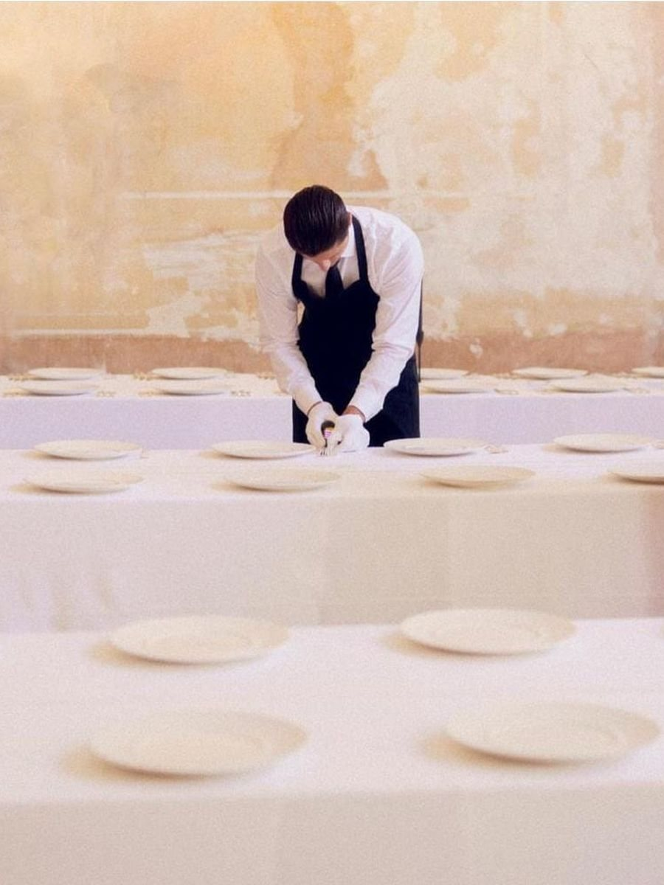
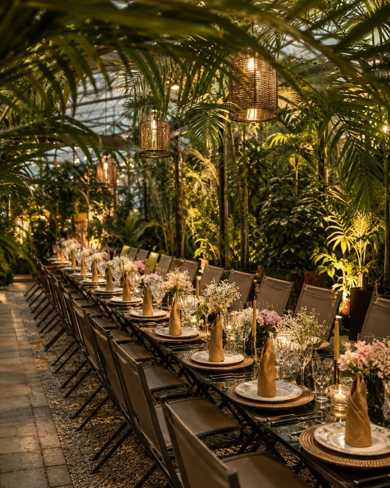
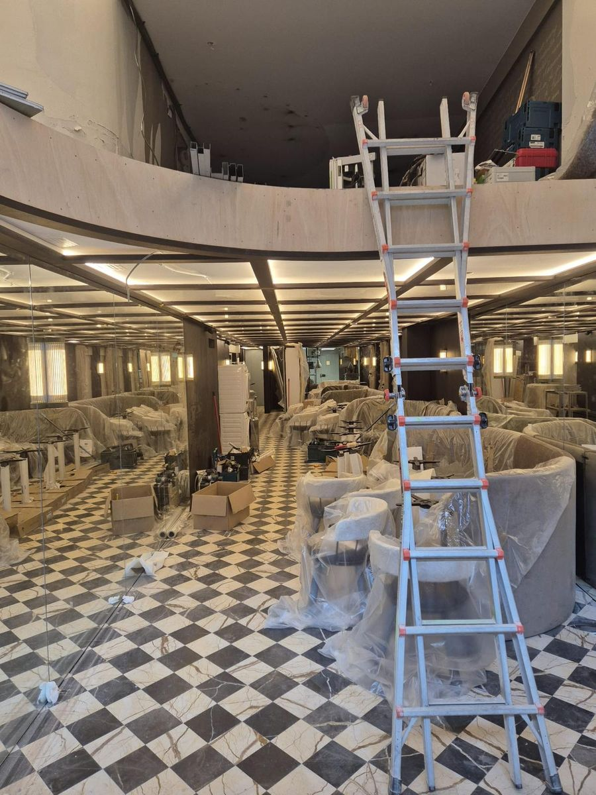
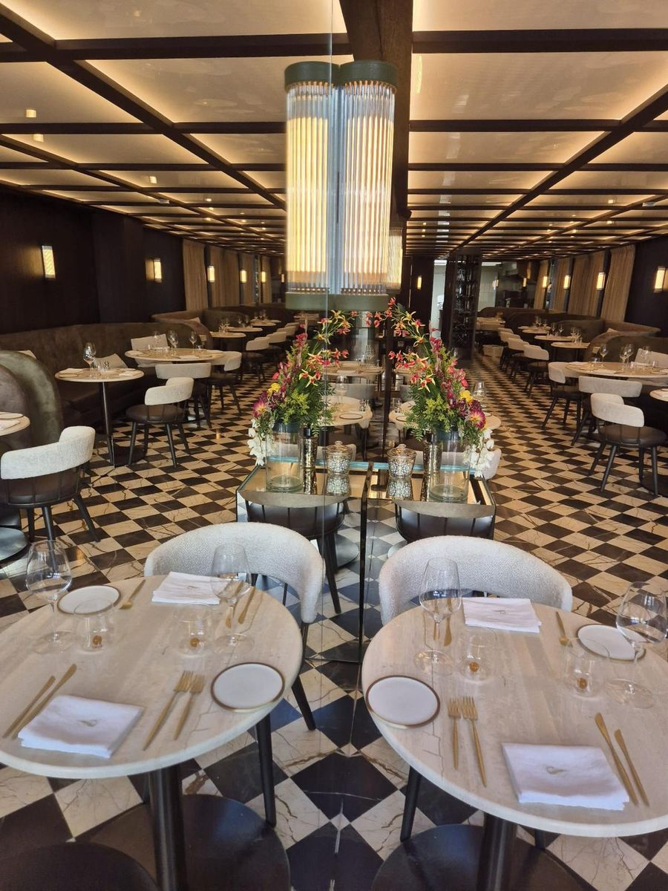
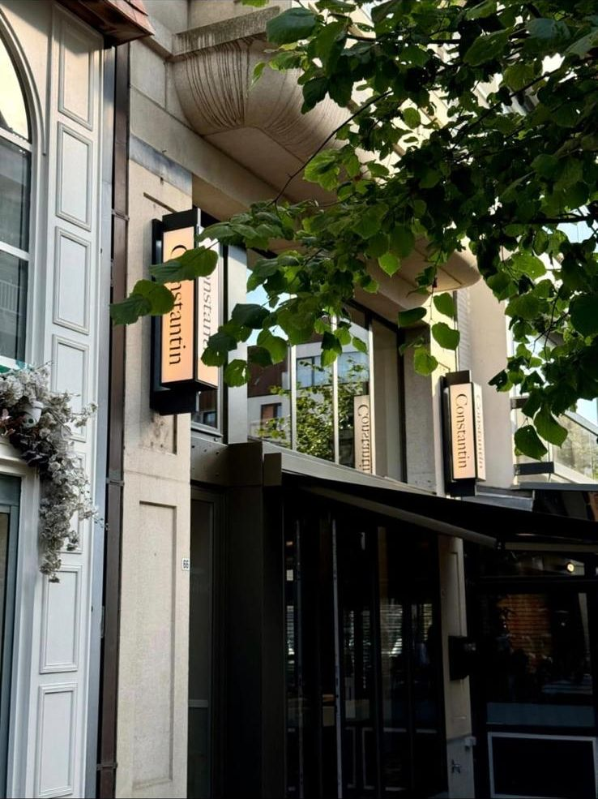
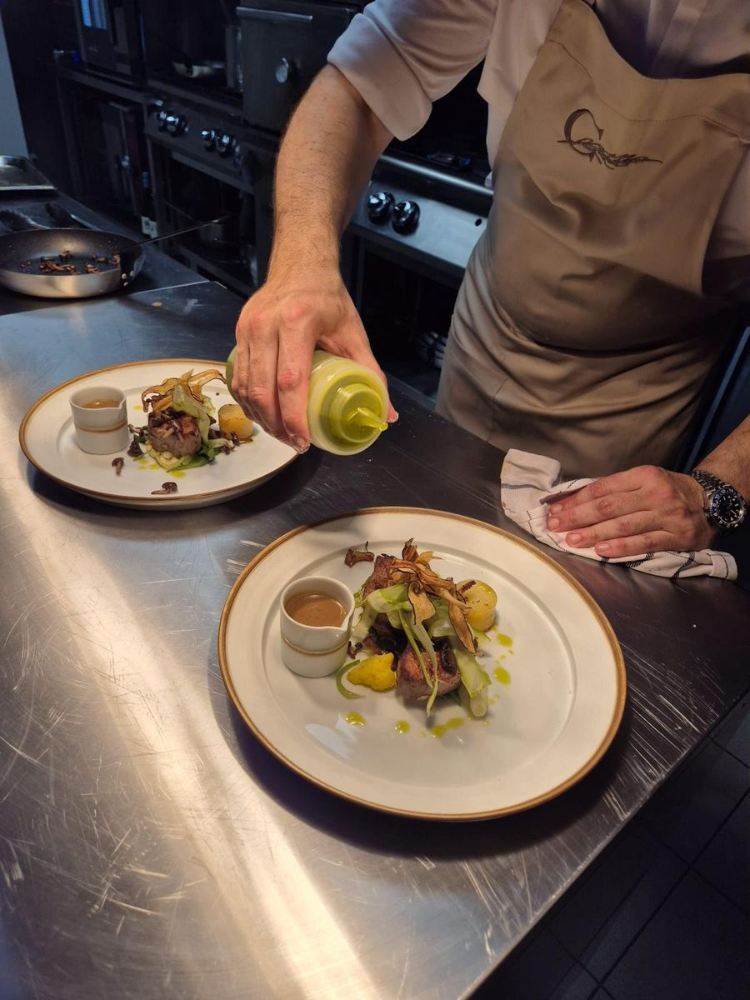
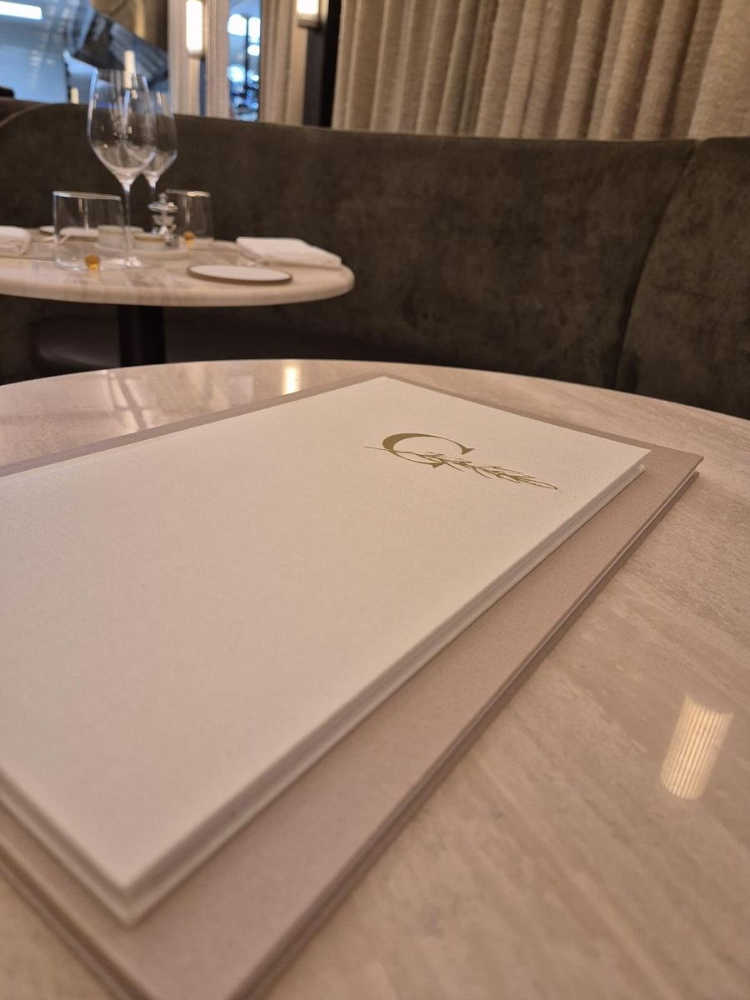
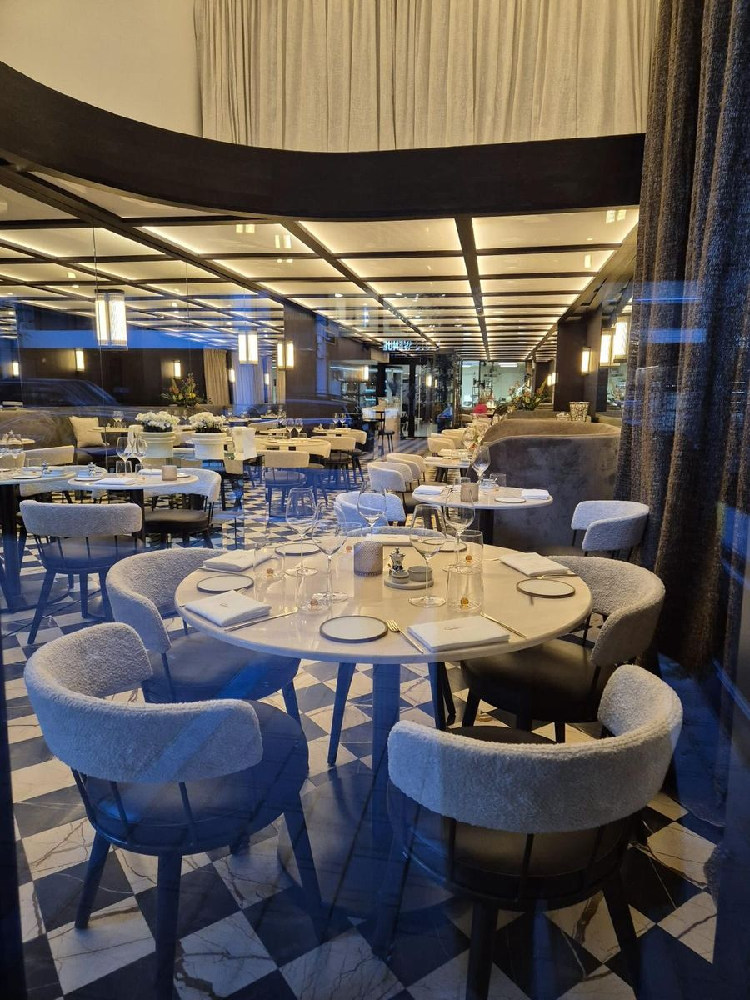
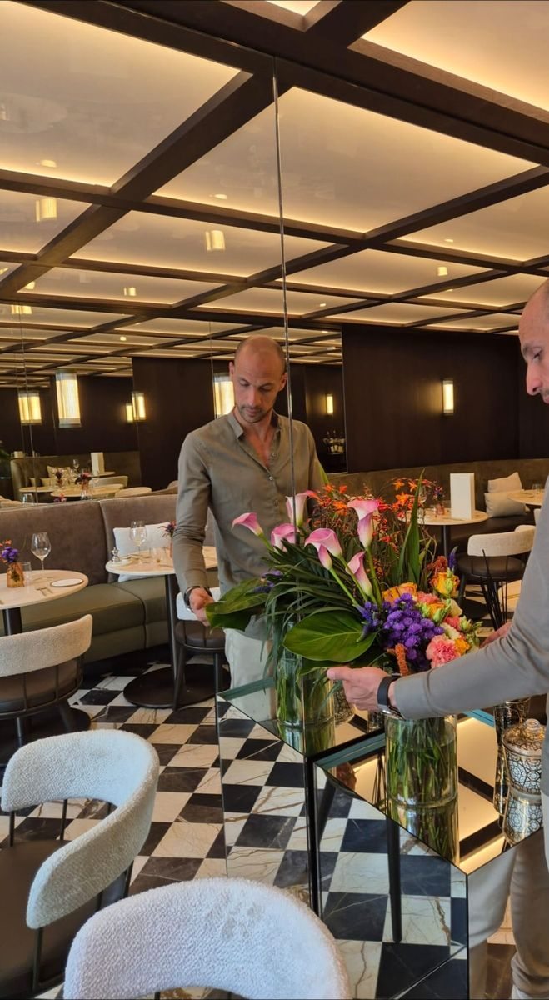

Service and guest experience
Welcome, guest relations, complaint handling and consistency of the experience at every point of contact.
Team training, written standards and operational structure for hotels, riads, restaurants and catering companies in Morocco. In the field, during service, with your teams.

Because inconsistency almost never comes from a lack of goodwill. It comes from the absence of a written standard, from middle managers promoted without ever being trained to manage, and from new staff who learn the job by watching the person next to them.
Dyani Hospitality does not simply come in to train. We observe your services, identify where the experience breaks down, write the standards that are missing, train your teams to hold them, then verify on site that they still hold three months later.
The aim is not to make you dependent on a consultant. It is to leave behind a system that works without us.
Services
Every assignment combines these registers according to what the diagnostic reveals. They rarely work in isolation.
Welcome, guest relations, complaint handling and consistency of the experience at every point of contact.
Training chefs de rang, maîtres d'hôtel, housekeeping supervisors and front-office managers in floor-level management.
Building skills in the practical craft of the dining room, the bar, the front desk and housekeeping.
Writing procedures, checklists and role descriptions, then verifying that they are genuinely applied.
Method
Each stage produces a deliverable. None is optional: it is their sequence that makes the result last.
Several services followed in real conditions, without intervening.
Where the experience breaks down, and the real causes behind it.
Standards, procedures and checklists written in a format teams will use.
Transmission to the teams, on site and in real situations.
Supervisors supported through the first services of application.
Mystery visits, a gap-to-standard grid and agreed indicators.
Correcting what did not hold, adjusting to the reality of the operation.
In the field
Training does not happen in a seminar room, at a distance from the operation. It happens where service takes place, with the teams who deliver it, on the equipment they actually use.
A team does not learn a standard by listening to it. It learns by performing it, corrected on the spot, until the gesture holds without having to think about it. This is why every assignment begins with several services observed in real conditions, not with a slide deck.
The documents handed over — procedures, checklists, role descriptions — are not end-of-assignment deliverables. They are the tools the teams work with during the training, and after we leave.
What has not been performed in front of me has not been trained.
Programmes
Durations are indicative and adjusted to your organisation. Four families, twelve programmes.
The fee depends on what you need to correct. Number of days, headcount, starting level, location: quoting a price before having observed a service would mean selling you a programme without knowing whether it answers your problem.
A conversation, an on-site observation, then a costed proposal. The first observation visit is free of charge.

An exceptional room never compensates for approximate service — it makes it visible.
Practical technique, service sequence, pace
Running a station, advising the guest, upselling
Directing service, coordinating with the kitchen, handling incidents
Briefing, checking, feedback, onboarding, holding the standard
First seconds, bearing, complaint handling
Rapid levelling-up before an assignment, consistency of service
Case study
From the building site to the first service, I led the creation of Le Constantin, in the heart of the Carré d'Or. A house to be built entirely: no menu, no team, no procedures.







Beyond the opening, the aim was to build a house able to run without me: specifications, role descriptions, procedures, and the transfer of know-how to the supervisors.
A successful opening is not measured on the day the doors open, but by the ability of the house to hold the same standard once the project has been handed over.
The founder
Ibrahim Dyani — Maître d'Hôtel, trainer and consultant in operational structure.
Training is not a career change; it has been part of my work since 2020. At JML Concept, official caterer to the Royal Palace of Belgium, I trained service teams to the requirements of protocol — including agency teams assembled for a single event who had to hold the same level as permanent staff.
That is exactly what I do for you: setting a team's level against the standard your establishment wants to reach.
I also train the managers, and that is often where everything is decided. A chef de rang promoted to maître d'hôtel knows how to serve, but no one has taught them to brief, to correct without humiliating, or to hold a standard through a full Saturday night. Training a waiter improves one service; training their supervisor improves every service that follows.
Recommendation
“Ibrahim worked alongside me on assignments demanding impeccable precision, before taking on the role of Maître d'Hôtel independently.”
“I recommend him most warmly and without the slightest reservation […] for any role involving exacting standards, discretion, protocol rigour and service of the very highest level.”
The full letter of recommendation is available on request.
The qualities noted in the letter:
A standard explained in French to management, then passed on in Arabic to the commis, is a standard that will be applied. Translated approximately by a chef de rang in the middle of service, it will not be.
Training is delivered in French or in Arabic without distinction. The materials handed to your teams are in French.
Get in touch
Select, add detail if you wish, then send. Only your e-mail address is needed so that we can reply: the message adapts to what you fill in.